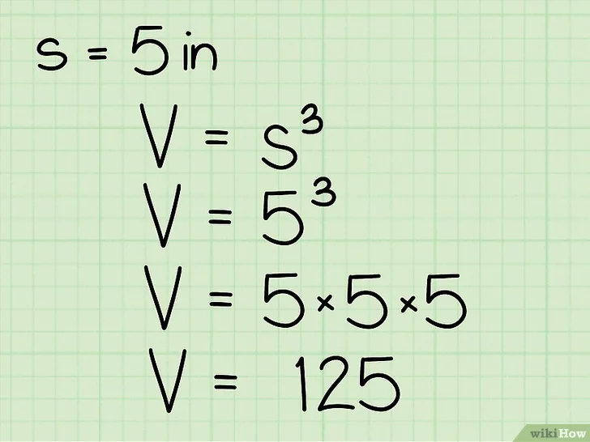

El volumen de una figura es la medida de cuánto espacio tridimensional ocupa. También puedes pensar en el volumen de una figura como cuánta agua (o aire, arena, etc.) podría albergar si se llenara por completo. Las unidades de volumen comunes incluyen los centímetros cúbicos (cm3), los metros cúbicos (m3), las pulgadas cúbicas (in3) y los pies cúbicos (ft3).
2.- Aprende la fórmula para el volumen de un cubo. Debido a que las longitudes de todos los lados de un cubo son iguales, la fórmula para el volumen de este es muy fácil. Es V = l3, en donde "V" es el volumen y "l" es la longitud de los lados del cubo. Para hallar s3, simplemente multiplica "s" por sí mismo 3 veces: s3 = s * s * s.
3.- Halla la longitud de un lado del cubo. Dependiendo de tu tarea, el cubo estará etiquetado con esta información o es posible que debas medir la longitud del lado con una regla. Recuerda que, debido a que es un cubo, las longitudes de todos los lados deben ser iguales, así que no importa cuál midas. Si no estás completamente seguro de que la figura sea un cubo, mide cada uno de los lados para determinar si son iguales. Si no lo son, tendrás que usar el método a continuación para calcular el volumen de un sólido rectangular.
 ¿CÓMO ENCONTRAR EL VOLUMEN DE UN SÓLIDO? El volumen de un sólido es la medida de cuánto espacio ocupa un objeto. Este artículo mostrará cómo calcular el volumen de un sólido y el volumen de sólidos regulares e irregulares. El método para determinar el volumen de un sólido depende de su forma. El volumen de un sólido se mide en unidades cúbicas, es decir, centímetro cúbico, metro cúbico, pies cúbicos, etc.
Vídeos para reforzar lo aprendido
Cuestionario para reforzar lo aprendido